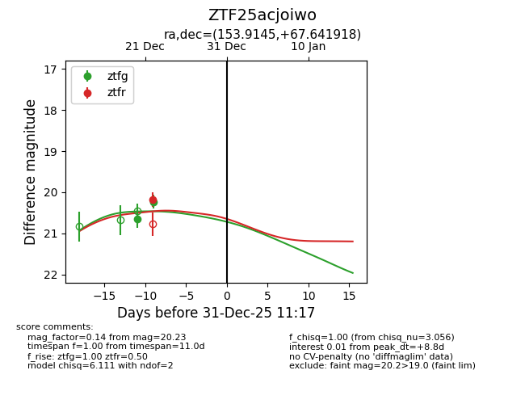
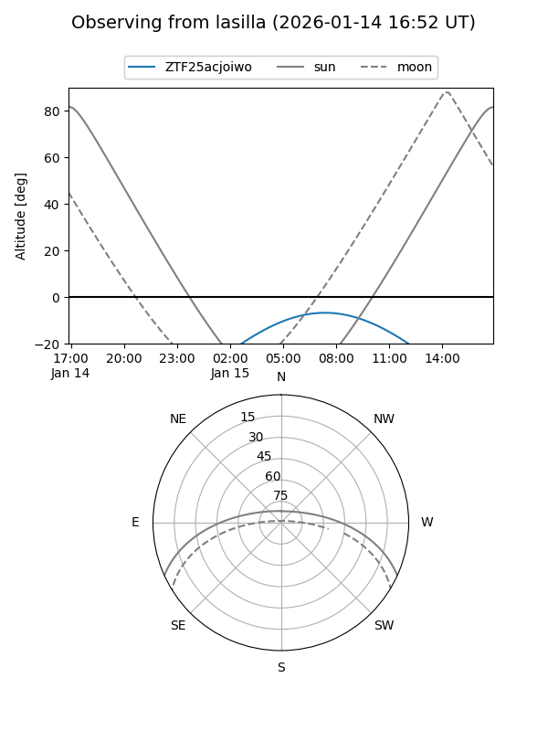
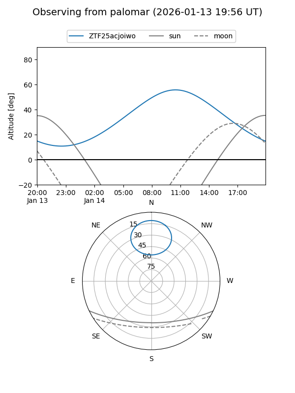
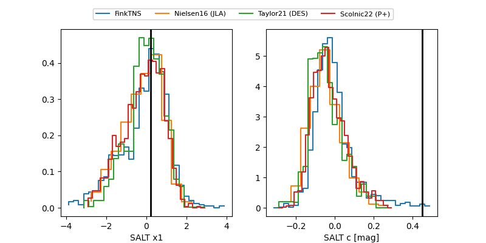

ZTF25acjoiwo
Target ZTF25acjoiwo at 2025-12-24 16:17
Aliases and brokers:
FINK: fink-portal.org/ZTF25acjoiwo
Lasair: lasair-ztf.lsst.ac.uk/objects/ZTF25acjoiwo
ALeRCE: alerce.online/object/ZTF25acjoiwo
alt names
ZTF25acjoiwo (ztf,fink_ztf)
Coordinates:
equatorial (ra, dec) = 153.9145,+67.64192
equatorial (HMS+DMS) = 10:15:39.49,+67:38:30.91
galactic (l, b) = (142.0915,+43.23634)
Flags:
Photometry:
last ztfg=20.23, ztfr=20.18
2 ztfg, 1 ztfr detections
Lightcurve

Visibility


Additional plots
